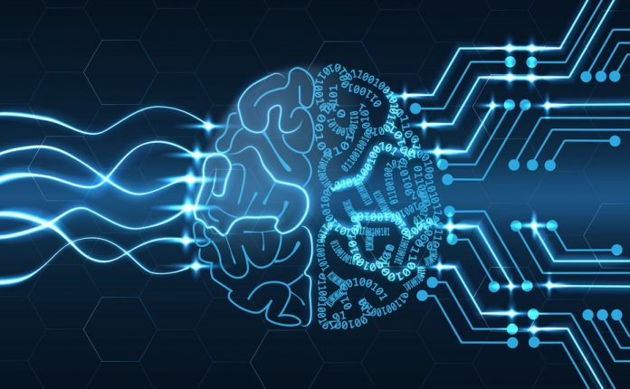

A tantárgy részletes tematikája:
- A tantárgy rövid tartalma:Az emberi és a gépi intelligencia ismérvei. Történeti előzmények.
- Logikai játékok, tételbizonyítás, automatikus programozás, szimbolikus számítás, robotika, gépi látás, beszédfelismerés, ágens megközelítés.
- A tudás fontossága, tudásszemléltetési technikák: formális logika, előállító szabályok, szemantikus hálók, keretek, scriptek.
- Propozíciós és predikátum logika, PROLOG és LISP programnyelv. Fuzzy logika. Következtetési eljárások, vak és irányított keresési módszerek.
- Lokális algoritmusok: szimulált hűtés, Tabu-keresés. Genetikus algoritmus. Tudáskinyerés, tudásfeldolgozás. Szakértő rendszerek felépítése, funkciói.
- Kognitív pszichológiai alapismeretek. Előrecsatolt és visszacsatolt neurális hálók. Mintaillesztő algoritmusok.
- Természetes nyelvek feldolgozása. Morfológia típusok. A gépi intelligencia társadalmi hatásai.
|

|